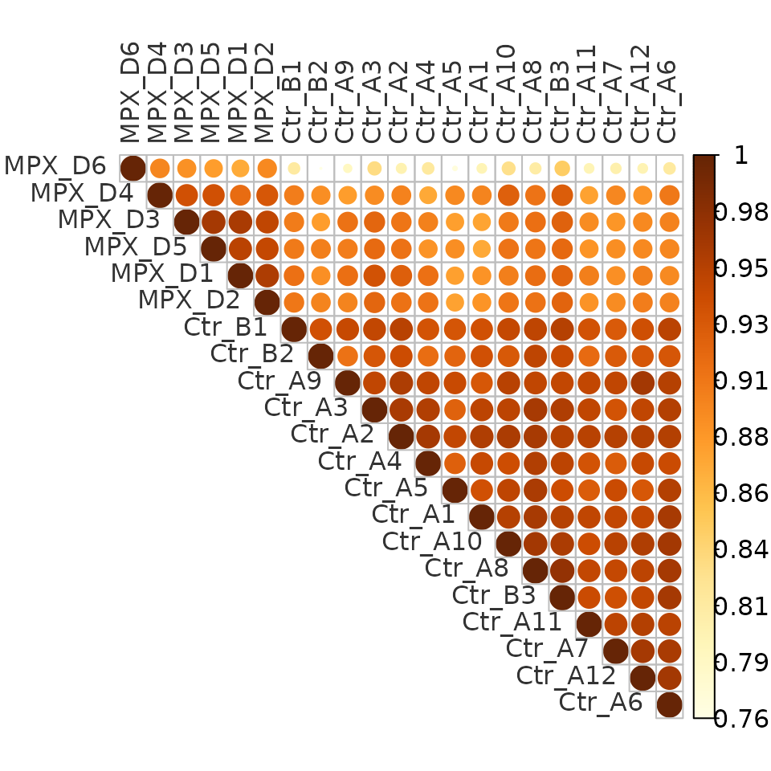
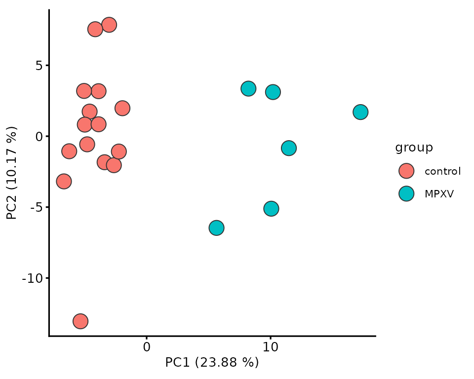
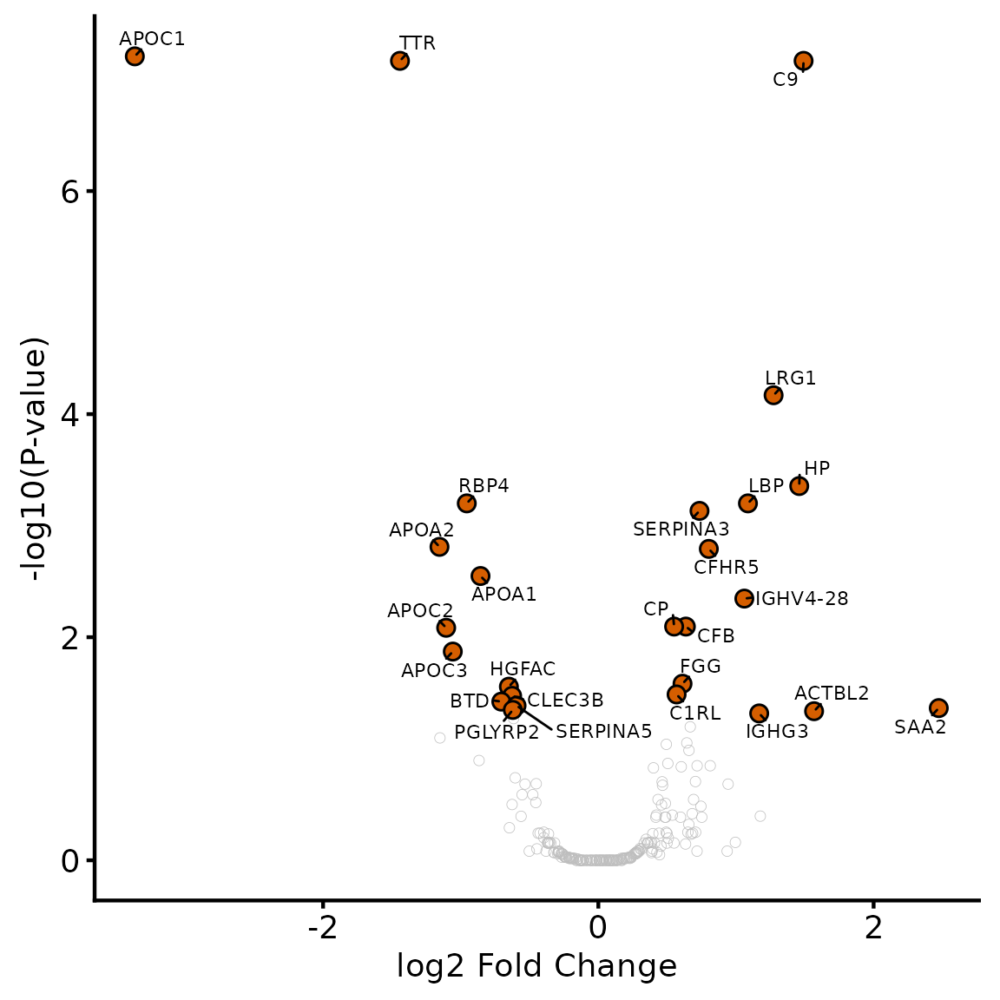
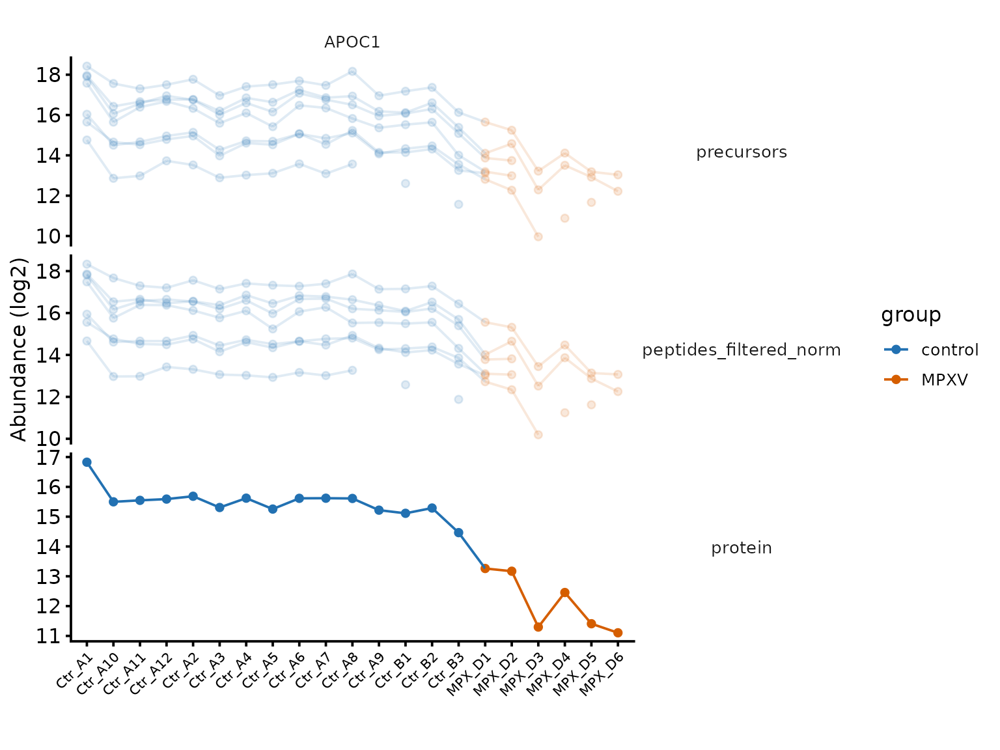
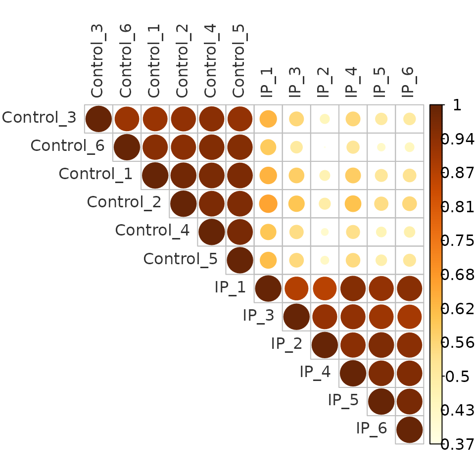
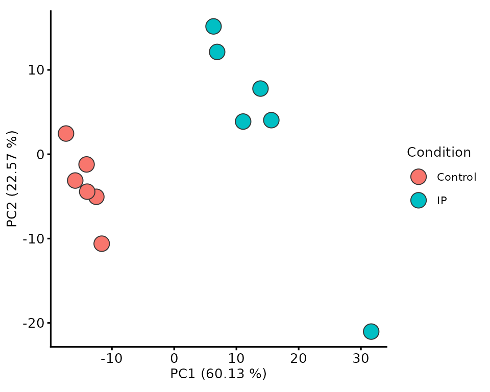
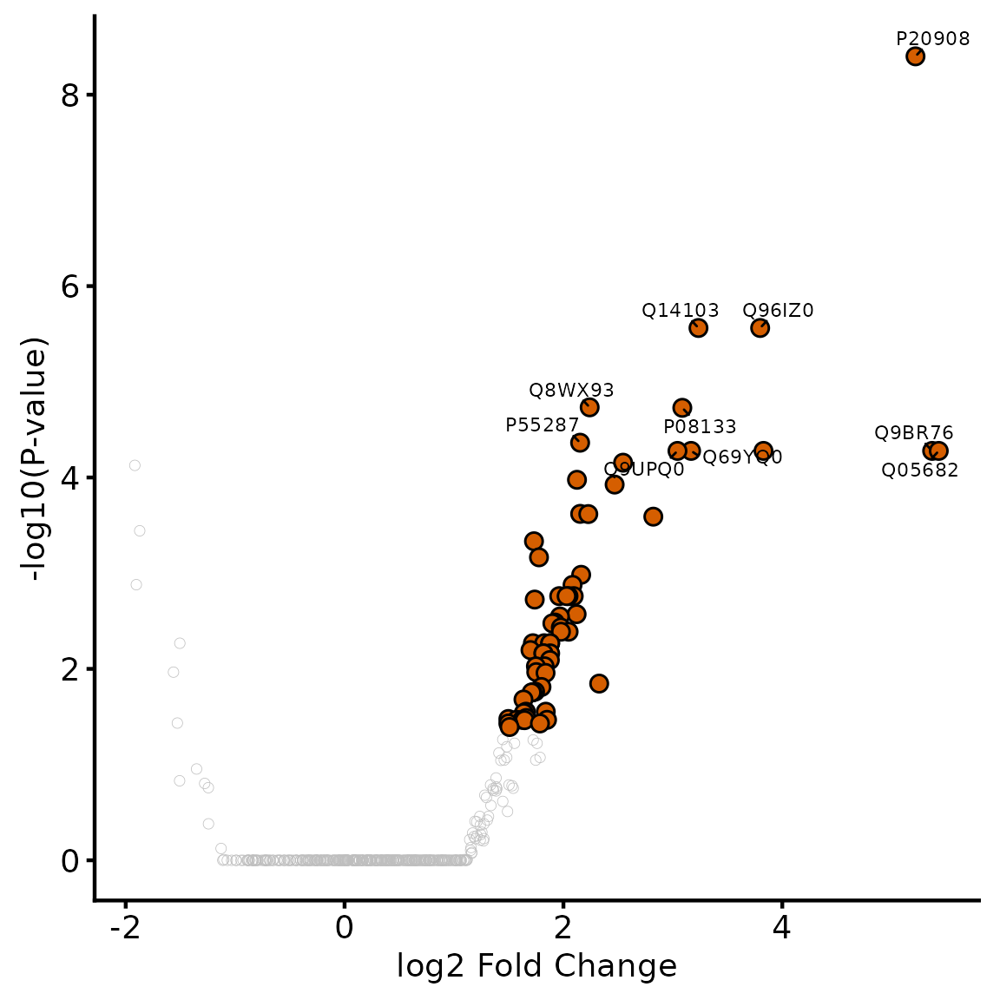
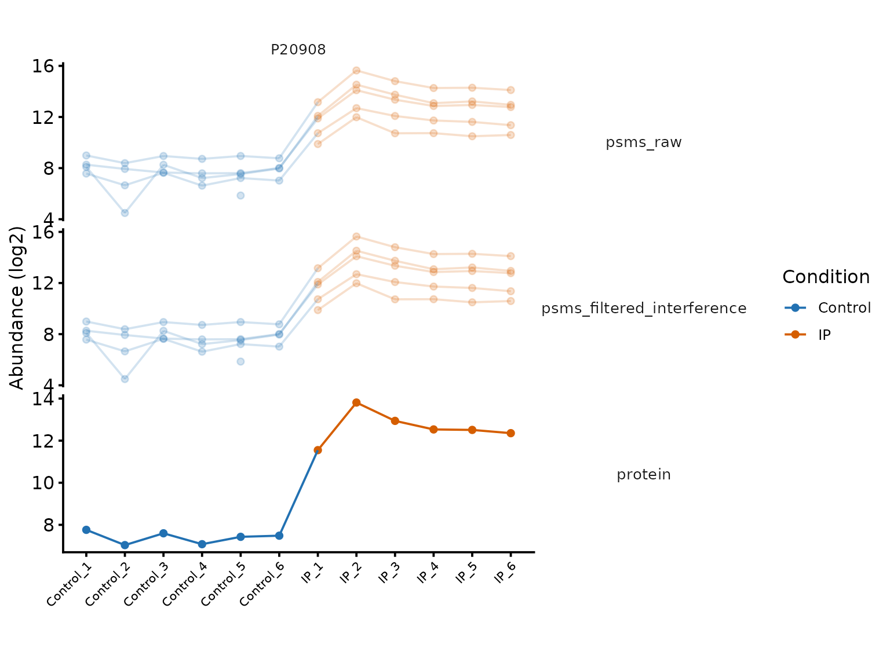
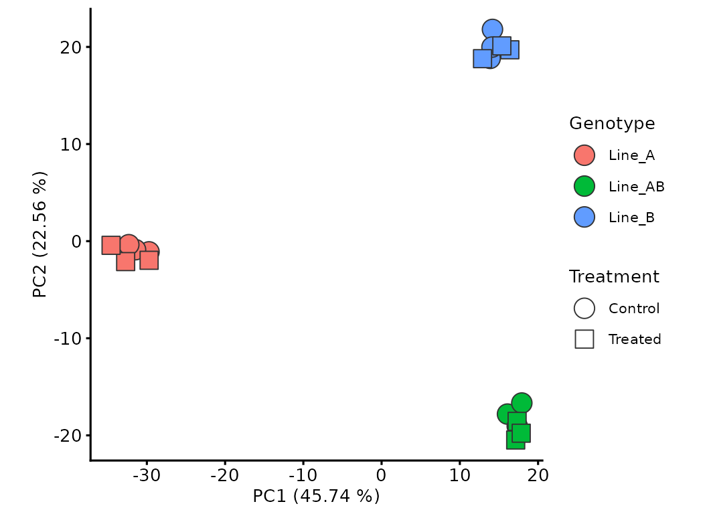

Data exploration and statistical testing
Tom Smith
2026-09-11
Source:vignettes/exploration_and_statistical_testing.Rmd
exploration_and_statistical_testing.RmdOnce protein-level abundances have been QCed, filtered and
summarised, the next step is to explore the data with respect to the
experimental design, then test for differential abundance between
conditions. Below, that process is worked through three times, using
datasets carried over from the QC vignettes: first with
dia_qf (Part A), an LFQ-DIA whole-proteome comparison of
blood plasma from MPXV-infected and healthy individuals; then with
tmt_qf_mq (Part B), a TMT immunoprecipitation comparing a
bait pulldown (IP) against a Control pulldown;
and finally with tmt_qf_factorial (Part C), a TMT
experiment with two crossed factors rather than one. Each design calls
for different choices at the testing stage — an enrichment design
changes what counts as a meaningful fold change, and a second factor
changes what the model should contain and what its coefficients
mean.
Part A: LFQ-DIA whole-proteome comparison
dia_qf is the blood plasma dataset from the LFQ-DIA QC vignette
(Wang et al. 2022): a case series
comparing MPXV infection, COVID-19 and healthy controls, summarised to
protein level with robustSummary. The clinical group of
each sample is in the group column. The MPXV-vs-control
comparison is the one worked through here, so the object is restricted
to those samples up front.
names(dia_qf)
#> [1] "precursors" "peptides_filtered"
#> [3] "peptides_filtered_norm" "peptides_filtered_missing"
#> [5] "peptides_for_summarisation" "protein"
knitr::kable(as.data.frame(colData(dia_qf))[, c('group', 'sex', 'age.group')])| group | sex | age.group | |
|---|---|---|---|
| COVID_E1 | Covid19 | m | 21-30 |
| COVID_E10 | Covid19 | m | 41-50 |
| COVID_E2 | Covid19 | m | 21-30 |
| COVID_E3 | Covid19 | m | 41-50 |
| COVID_E4 | Covid19 | m | 31-40 |
| COVID_E5 | Covid19 | m | 21-30 |
| COVID_E6 | Covid19 | m | 21-30 |
| COVID_E7 | Covid19 | m | 41-50 |
| COVID_E8 | Covid19 | m | 41-50 |
| COVID_E9 | Covid19 | m | 41-50 |
| Ctr_A1 | control | m | 21-30 |
| Ctr_A10 | control | m | 31-40 |
| Ctr_A11 | control | m | 31-40 |
| Ctr_A12 | control | m | 41-50 |
| Ctr_A2 | control | m | 21-30 |
| Ctr_A3 | control | m | 21-30 |
| Ctr_A4 | control | m | 21-30 |
| Ctr_A5 | control | m | 21-30 |
| Ctr_A6 | control | m | 21-30 |
| Ctr_A7 | control | m | 21-30 |
| Ctr_A8 | control | m | 21-30 |
| Ctr_A9 | control | m | 31-40 |
| Ctr_B1 | control | m | 41-50 |
| Ctr_B2 | control | m | 41-50 |
| Ctr_B3 | control | m | 41-50 |
| MPX_D1 | MPXV | m | 21-30 |
| MPX_D2 | MPXV | m | 21-30 |
| MPX_D3 | MPXV | m | 31-40 |
| MPX_D4 | MPXV | m | 31-40 |
| MPX_D5 | MPXV | m | 41-50 |
| MPX_D6 | MPXV | m | 21-30 |
Sample correlation
A pairwise correlation heatmap is a quick way to check that
replicates agree with each other more than they agree with samples from
the other condition. plot_cor_samples computes the Spearman
correlation between samples for a given assay and plots it as a heatmap.
Somewhat confusingly, the is.corr=FALSE argument below is
needed despite the input being a correlation matrix:
plot_cor_samples passes the input to
corrplot::corrplot, which automatically sets the legend
limits to -1 to 1 for correlations, compressing the range the samples
actually occupy. order='hclust' clusters the samples by
correlation, which is often more informative than the original
order.
plot_cor_samples(dia_prot, 'protein', is.corr=FALSE, order = 'hclust')
Principal component analysis
plot_pca performs a PCA on a given assay and plots two
of the components, optionally colouring points by a colData
column. robustSummary doesn’t require complete peptides, so
dia_qf[['protein']] retains some missing values (8.3 % of
the matrix). stats::prcomp can’t handle missing values, so
the default allowing_missing=FALSE would silently drop
every protein with any missing value via filterNA. Setting
allowing_missing=TRUE runs the PCA with
pcaMethods::pca instead. Note that
scale/center are passed on to whichever
underlying PCA function is used, so with pcaMethods::pca
scale takes a scaling method name ('uv',
unit-variance, is the equivalent of scale=TRUE in
stats::prcomp) rather than
TRUE/FALSE.
plot_pca(dia_prot, 'protein', colour_by='group', scale='uv', center=TRUE, allowing_missing=TRUE) +
theme_biomasslmb(base_size=10)
MPXV and control plasma separate along the first principal component, consistent with the correlation heatmap above.
Missingness and experimental condition
The protein-level abundances about to be tested contain missing values, so it is worth checking whether that missingness is random or structured by group. Missingness concentrated in one group — a protein consistently absent from the controls, say — both distorts the linear model and can be biologically meaningful in its own right, so it shouldn’t be ignored.
condition_miss_score fits a per-protein logistic
regression of missingness against group and returns Tjur’s R² per
protein: values near 1 mean a protein’s missingness is well explained by
group, values near 0 mean it looks unrelated to group.
condition_miss_index summarises this into a single
dataset-level value.
miss_res <- condition_miss_score(dia_qf, i = 'protein', group_cols = 'group')
#> Analysing assay 'protein': 239 features x 31 samples
#> Group variable: group (3 levels: control, Covid19, MPXV)
#> Results: 71 informative features | mean condition miss score = 0.114 | condition-structured: 0.4% | condition-independent: 25.1%
condition_miss_index(miss_res$summary)$index
#> Condition missingness index: 0.0464 | Weighted mean score: 0.1561 | Coverage: 29.7% (71 / 239 features informative) [coverage penalty applied]
#> [1] 0.04637771The index is close to zero: for this whole-proteome comparison,
protein-level missingness looks unrelated to group — in contrast to the
enrichment experiment in Part B, where absence from the control pulldown
is exactly the signal of interest. The protein-level abundances are
therefore tested directly, letting limma fit each protein
on whichever samples it was quantified in, rather than imputing.
Which proteins can be tested?
limma fits a linear model per protein, so each protein
needs enough genuinely quantified values for its group means and its
within-group variance to be estimable. A protein that fails this is not
“not significant” — it is untested, and the two must not be reported as
if they were the same thing.
The rule applied here is at least 2 quantified values in both conditions, counting the quantified values per condition so that the rule can be applied and reported alongside the results.
This count treats every column as an independent replicate. Where a sample has been acquired more than once, that is not true, and counting the acquisitions rather than the samples inflates the apparent replication while pulling the variance estimate towards technical rather than biological noise. Technical replicates are not biological replicates measures what that does to a result, and what to do with the repeat acquisitions instead.
group <- factor(dia_prot[['protein']]$group, levels = c('control', 'MPXV'))
n_quant <- sapply(levels(group), function(g){
rowSums(!is.na(assay(dia_prot[['protein']])[, group == g, drop = FALSE]))
})
testable <- rownames(n_quant)[apply(n_quant, 1, min) >= 2]
length(testable)
#> [1] 231
n_quant[apply(n_quant, 1, min) < 2, ]
#> control MPXV
#> A0A0C4DH31 0 4
#> P01706 1 4
#> P01714 10 1
#> P02741 1 6
#> P08294 9 1
#> Q08830 0 3
#> Q15166 7 0
#> Q9HDC9 10 1Three of the excluded proteins have no quantified values at all in
one condition. lmFit cannot estimate a group coefficient
from an empty group, so it returns NA for those rows with a
Partial NA coefficients warning. NA adjusted
p-values are then dropped silently by table(),
sum(..., na.rm=TRUE) and most other summaries, so an
unfiltered run reports a plausible-looking number of significant
proteins without ever indicating that some proteins could not be fitted.
Filtering first makes the exclusion explicit and countable.
The remaining excluded proteins were quantified in one or both
conditions, but only once in one of them, so their fold-change rests on
a single measurement with no way to judge its reproducibility. This
filter is not free: P02741 (CRP) is quantified in all 6
MPXV samples and just 1 of 15 controls, and is almost certainly a
genuine, large increase — it is missing from the controls precisely
because it is low there. Excluding it is the conservative
choice, not the correct one in any absolute sense; recovering proteins
like it requires modelling the missingness or imputing, which is what
restrict_imputation() and the
condition_miss_score() family are for.
When imputed values are being tested, this becomes two filters rather than one, because “quantified” and “has a value” stop being the same thing: at least 2 genuinely quantified values in at least one condition, checked against the unimputed assay, so that no result rests entirely on imputed values; and at least 2 values in both conditions, checked against the imputed assay that is actually being fitted, so that the model can be fitted. Here nothing is imputed, so both reduce to the single rule applied above.
For reporting, the per-condition counts are kept as columns so that a reader of the results table can see how much of each fold-change is supported by measurements.
n_quant_cols <- n_quant %>%
as.data.frame() %>%
setNames(paste0('n_quant_', levels(group))) %>%
tibble::rownames_to_column('Protein')Differential abundance testing with limma
limma performs the differential abundance testing
between control and MPXV. limma
fits a linear model per protein, then applies an empirical Bayes step
which borrows information across all proteins to stabilise the variance
estimate — important here since the 6 MPXV replicates give fairly noisy
per-protein variance estimates on their own.
treat is used rather than plain eBayes.
treat tests the null hypothesis that the absolute
fold-change is below a threshold (here 1.2-fold), rather than
the standard null of exactly no difference — this avoids flagging
changes that are statistically detectable but too small to be
biologically interesting. trend=TRUE lets the variance
prior depend on mean abundance; robust=TRUE down-weights
proteins with unusually extreme variance so they don’t distort the
shared prior.
Gene symbols from the protein assay’s
rowData are attached to the results, since they read more
clearly than accessions on the volcano plot.
design <- model.matrix(~group)
fit <- lmFit(assay(dia_prot[['protein']])[testable, ], design)
final_model <- treat(fit, fc = 1.2, trend = TRUE, robust = TRUE)
gene_names <- as.data.frame(rowData(dia_qf[['protein']])[, c('Protein.Group', 'Genes')])
limma_results <- topTreat(final_model, coef = 'groupMPXV', number = Inf) %>%
tibble::rownames_to_column('Protein') %>%
left_join(gene_names, by = c('Protein' = 'Protein.Group')) %>%
left_join(n_quant_cols, by = 'Protein') %>%
arrange(P.Value)
table(direction = ifelse(limma_results$logFC < 0, 'Dec.', 'Inc.'),
sig = limma_results$adj.P.Val < 0.05)
#> sig
#> direction FALSE TRUE
#> Dec. 86 12
#> Inc. 119 14The FDR adjustment is over the 231 testable proteins, itself a subset of those that passed the filtering thresholds in the QC vignette; a stricter or looser peptide/protein filter, or a stricter testability rule, would change the multiple-testing burden and hence the adjusted p-values.
Volcano plot
plot_volcano plots log-fold-change against
-log10(p-value) directly from a statistical testing results
data.frame; by default it expects logFC and
adj.P.Val columns, which is exactly what
topTreat returns.
sig_hits <- limma_results %>% filter(adj.P.Val < 0.05) %>% pull(Protein)
plot_volcano(limma_results, sig_col = NULL) +
geom_point(data = filter(limma_results, Protein %in% sig_hits),
aes(fill = adj.P.Val < 0.05), pch = 21, size = 3) +
scale_fill_manual(values = get_cat_palette(2)[2], guide = 'none') +
ggrepel::geom_text_repel(
data = filter(limma_results, Protein %in% sig_hits),
aes(label = Genes), min.segment.length = 0, size = 3)
The significant proteins are dominated by the acute-phase response:
positive acute-phase reactants such as SAA2,
HP, LBP and C9 are increased in
MPXV plasma, while negative acute-phase reactants such as
APOA1, APOA2, TTR and
RBP4 are decreased.
Inspecting proteins of interest
Before trusting a hit, it’s worth looking at the abundance values
behind it across the processing pipeline — from precursor level through
to the final protein-level estimate — to confirm the result isn’t being
driven by a single outlying precursor. plot_protein_assays
plots one or more proteins across any set of assays in the
QFeatures object.
top_hit <- head(sig_hits, 1)
plot_protein_assays(
dia_prot, top_hit,
experiments_to_plot = c('precursors', 'peptides_filtered_norm', 'protein'),
protein_id_col = 'Protein.Group',
label_col = 'Genes',
log2transform_cols = c('precursors')) +
aes(colour = colData(dia_prot)[colname, 'group']) +
scale_colour_manual(values = get_cat_palette(2), name = 'group') +
theme(aspect.ratio = 1/3)
The precursor-level trend is consistent across the processing steps and across the individual precursors contributing to the protein, giving confidence that this is a genuine change rather than an artefact of summarisation.
Part B: a TMT immunoprecipitation
tmt_qf_mq is the immunoprecipitation dataset from Part A
of the enrichment designs
vignette: a bait pulldown (IP) against a control pulldown
(Control), 6 replicates each, searched with MaxQuant and
summarised to protein level with robustSummary. Its
rowData uses MaxQuant’s column names rather than Proteome
Discoverer’s, which is visible in the calls below.
An enrichment design also calls for choices at the testing stage that a whole-proteome comparison does not, and how far those matter depends on the acquisition. Part B of the enrichment designs vignette works through them on a label-free pulldown, where they decide the result; here they are comparatively mild, and the section on testability below shows why.
names(tmt_qf_mq)
#> [1] "psms_raw" "psms_filtered"
#> [3] "psms_filtered_interference" "psms_filtered_forSummary"
#> [5] "protein"
knitr::kable(data.frame(colData(tmt_qf_mq)))| Condition | Replicate | quantCols | |
|---|---|---|---|
| IP_1 | IP | 1 | IP_1 |
| Control_4 | Control | 4 | Control_4 |
| IP_5 | IP | 5 | IP_5 |
| Control_1 | Control | 1 | Control_1 |
| IP_4 | IP | 4 | IP_4 |
| Control_3 | Control | 3 | Control_3 |
| Control_6 | Control | 6 | Control_6 |
| IP_2 | IP | 2 | IP_2 |
| Control_2 | Control | 2 | Control_2 |
| IP_3 | IP | 3 | IP_3 |
| Control_5 | Control | 5 | Control_5 |
| IP_6 | IP | 6 | IP_6 |
Sample correlation
plot_cor_samples(tmt_qf_mq, 'protein', is.corr=FALSE, order = 'hclust')
Principal component analysis
As in Part A, tmt_qf_mq[['protein']] retains missing
values (0.8 % of the matrix), so allowing_missing=TRUE is
set and the PCA runs via pcaMethods::pca. Most of that
missingness is contributed by the proteins the QC vignette masked for
resting on a single PSM per channel.
plot_pca(tmt_qf_mq, 'protein', colour_by='Condition', scale='uv', center=TRUE, allowing_missing=TRUE) +
theme_biomasslmb(base_size=10)
IP and Control samples separate clearly, as expected for a specific enrichment.
Which proteins can be tested?
The same testability rule applies here.
condition_mq <- factor(tmt_qf_mq[['protein']]$Condition, levels = c('Control', 'IP'))
n_quant_mq <- sapply(levels(condition_mq), function(g){
rowSums(!is.na(assay(tmt_qf_mq[['protein']])[, condition_mq == g, drop = FALSE]))
})
testable_mq <- rownames(n_quant_mq)[apply(n_quant_mq, 1, min) >= 2]
c(proteins = nrow(n_quant_mq),
testable = length(testable_mq),
absent_from_control = sum(n_quant_mq[, 'Control'] == 0))
#> proteins testable absent_from_control
#> 442 441 0It excludes almost nothing, and — more to the point — not one protein is absent from the control pulldown, which is the pattern an enrichment design would lead you to expect and to worry about discarding.
That is the usual position for a single-plex TMT experiment, and the QC vignette measures it directly: all twelve channels are quantified from the same spectrum, so a protein enriched in the IP registers in the control channels too, at a lower intensity rather than as a missing value. The testability filter is doing ordinary work here, not the enrichment-specific work it does when each sample is acquired separately — which is where Part B of the enrichment designs vignette picks up, with a testability rule and an imputation strategy chosen for that case.
Differential abundance testing with limma
The statistical model itself is the same as Part A, but the
biological question is different, and that changes what fold-change
threshold is appropriate. Part A looked for shifts in a whole-proteome
comparison, where a modest 1.2-fold treat threshold is
appropriate. Part B identifies bona fide interactors of the bait
protein, and a real interactor is substantially enriched in the IP
relative to the control rather than just detectably different, so the
threshold here is a stricter 2-fold.
design_mq <- model.matrix(~condition_mq)
fit_mq <- lmFit(assay(tmt_qf_mq[['protein']])[testable_mq, ], design_mq)
final_model_mq <- treat(fit_mq, fc = 2, trend = TRUE, robust = TRUE)
limma_results_mq <- topTreat(final_model_mq, coef = 'condition_mqIP', number = Inf) %>%
tibble::rownames_to_column('Protein') %>%
arrange(P.Value)
table(direction = ifelse(limma_results_mq$logFC < 0, 'Dec.', 'Inc.'),
sig = limma_results_mq$adj.P.Val < 0.05)
#> sig
#> direction FALSE TRUE
#> Dec. 118 6
#> Inc. 253 64Both enriched and depleted proteins can be statistically significant here, but identifying interactors turns specifically on enrichment in the IP: a depleted protein does not indicate an interaction with the bait, so the candidate interactors below are the significantly enriched proteins only.
Filtering the results this way is not the same as testing one-sidedly. The p-values above were computed against a two-sided null, so half of each one covers the direction just discarded, and the multiple-testing correction was applied across both directions. A one-sided test spends that power on the direction of interest instead; the enrichment designs vignette shows how, and what it does and does not buy.
Volcano plot
With 64 candidate interactors, labelling every point would make the plot unreadable, so only the 10 most significant are labelled.
top_hits_mq <- head(sig_hits_mq, 10)
plot_volcano(limma_results_mq, sig_col = NULL) +
geom_point(data = filter(limma_results_mq, Protein %in% sig_hits_mq),
aes(fill = adj.P.Val < 0.05), pch = 21, size = 3) +
scale_fill_manual(values = get_cat_palette(2)[2], guide = 'none') +
ggrepel::geom_text_repel(
data = filter(limma_results_mq, Protein %in% top_hits_mq),
aes(label = Protein), min.segment.length = 0, size = 3)
Inspecting proteins of interest
As in Part A, the feature-to-protein trend behind the top candidate
interactor is worth inspecting, here working from PSMs rather than
precursors: psms_raw and
psms_filtered_interference in place of
precursors and peptides_filtered_norm, and
Leading.razor.protein in place of
Protein.Group.
top_hit_mq <- head(sig_hits_mq, 1)
plot_protein_assays(
tmt_qf_mq, top_hit_mq,
experiments_to_plot = c('psms_raw', 'psms_filtered_interference', 'protein'),
protein_id_col = 'Leading.razor.protein',
label_col = 'Leading.razor.protein',
log2transform_cols = c('psms_raw')) +
aes(colour = colData(tmt_qf_mq)[colname, 'Condition']) +
scale_colour_manual(values = get_cat_palette(2), name = 'Condition') +
theme(aspect.ratio = 1/3)
The PSMs consistently show higher abundance in the IP samples than the Control samples, supporting this as a genuine interactor rather than an artefact of a single PSM or a missing-value pattern.
Part C: two factors at once
tmt_qf_factorial is the whole-proteome TMT experiment
from reading
MaxQuant output: three cell lines, each treated with a vehicle
(Control) or a compound (Treated), in three
replicates.
Both parts above had one factor and one comparison to make. This one has two crossed factors, which changes three things: which terms belong in the model, what the coefficients mean once they are there, and how much of the answer is lost by leaving a factor out. Nothing about the QC or the summarisation changed — the design only starts to matter here.
knitr::kable(data.frame(colData(tmt_qf_factorial)))| Genotype | Treatment | Replicate | quantCols | |
|---|---|---|---|---|
| Line_A_Control_1 | Line_A | Control | 1 | Line_A_Control_1 |
| Line_AB_Control_1 | Line_AB | Control | 1 | Line_AB_Control_1 |
| Line_A_Control_2 | Line_A | Control | 2 | Line_A_Control_2 |
| Line_AB_Control_2 | Line_AB | Control | 2 | Line_AB_Control_2 |
| Line_B_Treated_1 | Line_B | Treated | 1 | Line_B_Treated_1 |
| Line_B_Control_2 | Line_B | Control | 2 | Line_B_Control_2 |
| Line_B_Treated_2 | Line_B | Treated | 2 | Line_B_Treated_2 |
| Line_B_Control_1 | Line_B | Control | 1 | Line_B_Control_1 |
| Line_AB_Treated_1 | Line_AB | Treated | 1 | Line_AB_Treated_1 |
| Line_A_Control_3 | Line_A | Control | 3 | Line_A_Control_3 |
| Line_A_Treated_3 | Line_A | Treated | 3 | Line_A_Treated_3 |
| Line_B_Treated_3 | Line_B | Treated | 3 | Line_B_Treated_3 |
| Line_AB_Control_3 | Line_AB | Control | 3 | Line_AB_Control_3 |
| Line_A_Treated_1 | Line_A | Treated | 1 | Line_A_Treated_1 |
| Line_AB_Treated_2 | Line_AB | Treated | 2 | Line_AB_Treated_2 |
| Line_A_Treated_2 | Line_A | Treated | 2 | Line_A_Treated_2 |
| Line_B_Control_3 | Line_B | Control | 3 | Line_B_Control_3 |
| Line_AB_Treated_3 | Line_AB | Treated | 3 | Line_AB_Treated_3 |
factorial_prot <- assay(tmt_qf_factorial[['protein']])
genotype <- factor(tmt_qf_factorial[['protein']]$Genotype,
levels = c('Line_A', 'Line_B', 'Line_AB'))
treatment <- factor(tmt_qf_factorial[['protein']]$Treatment,
levels = c('Control', 'Treated'))Which factor dominates
plot_pca(tmt_qf_factorial, 'protein', colour_by = 'Genotype', shape_by = 'Treatment',
scale. = TRUE, center = TRUE) +
theme_biomasslmb(base_size = 10)
The cell line separates the samples; the treatment does not. That is the ordinary situation for cell lines and it is visible before any model is fitted. Quantifying it makes the size of the problem clear.
n_sig <- function(design, coef) {
fit <- eBayes(lmFit(factorial_prot, design), trend = TRUE, robust = TRUE)
sum(topTable(fit, coef = coef, number = Inf)$adj.P.Val < 0.05)
}
additive <- model.matrix(~ genotype + treatment)
c(proteins = nrow(factorial_prot),
differ_between_lines = n_sig(additive, 2:3))
#> proteins differ_between_lines
#> 1173 10141014 of the 1173 proteins differ between the lines. A factor that moves most of the proteome is not a detail to be only mentioned in the methods; it is the largest source of variance in the experiment, and every decision below follows from that.
Testing for impact of treatment - what leaving the genotype out costs
The experiment is balanced — every line appears equally often in both
treatment groups — so leaving genotype out of the model
does not bias the treatment estimate. It is tempting to conclude from
that it can be left out when testing for an impact of treatment. It
cannot, because bias is not the only thing at stake: variance the model
does not explain stays in the residual, and the residual is what every
p-value is measured against.
c(ignoring_line = n_sig(model.matrix(~ treatment), 'treatmentTreated'),
adjusting_for_line = n_sig(additive, 'treatmentTreated'))
#> ignoring_line adjusting_for_line
#> 4 75Leaving the genotype out costs most of the result. The two models estimate the same fold changes, and disagree only on how much noise those fold changes are being compared against.
residual_sd <- function(design) {
median(sqrt(eBayes(lmFit(factorial_prot, design),
trend = TRUE, robust = TRUE)$s2.post))
}
round(c(ignoring_line = residual_sd(model.matrix(~ treatment)),
adjusting_for_line = residual_sd(additive)), 3)
#> ignoring_line adjusting_for_line
#> 0.172 0.074This is the argument for recording every structured source of
variation you know about — culture batch, passage number, the day the
samples were prepared, which operator prepared them — and carrying it
into colData whether or not you expect to use it. A factor
that was never recorded cannot be adjusted for, and its variance is then
indistinguishable from noise. The technical replicates article
covers the case where the repeated measurements are of the same
biological sample, which needs a different treatment again.
Does the effect depend on the cell line?
genotype + treatment assumes the compound does the same
thing in every line. genotype * treatment drops that
assumption and lets the treatment effect differ between them. Which is
right is a question about the data, and it is answered by testing the
interaction terms rather than by choosing in advance.
interaction_design <- model.matrix(~ genotype * treatment)
colnames(interaction_design)
#> [1] "(Intercept)" "genotypeLine_B"
#> [3] "genotypeLine_AB" "treatmentTreated"
#> [5] "genotypeLine_B:treatmentTreated" "genotypeLine_AB:treatmentTreated"
interaction_terms <- grep(':', colnames(interaction_design), value = TRUE)
c(tested = nrow(factorial_prot),
line_specific_response = n_sig(interaction_design, interaction_terms))
#> tested line_specific_response
#> 1173 2Two proteins out of 1173 respond to the compound differently depending on the line. Those two are real findings and worth following up individually, but a line-specific response is not a general feature of this experiment, so the additive model describes the other 1171 proteins better than the interaction model does.
What an interaction term does to the other coefficients
Keeping the interaction term anyway looks harmless. It is not, and the reason has nothing to do with the extra parameters.
c(additive = n_sig(additive, 'treatmentTreated'),
interaction = n_sig(interaction_design, 'treatmentTreated'))
#> additive interaction
#> 75 20The same coefficient name means different things in the two
models. In ~ genotype + treatment,
treatmentTreated is the treatment effect averaged over the
lines. In ~ genotype * treatment, it is the treatment
effect in the reference line alone — Line_A here,
because that is the first level of the factor — and the other two lines’
effects are that coefficient plus their own interaction term. Testing it
answers a question about one third of the experiment.
The average effect is still recoverable from the interaction model, with a contrast that puts it back together explicitly.
contrast <- rep(0, ncol(interaction_design))
names(contrast) <- colnames(interaction_design)
contrast['treatmentTreated'] <- 1
# The treatment effect in the other two lines is treatmentTreated plus that
# line's interaction term, so weighting all three lines equally means 1/3 each
contrast[interaction_terms] <- 1/3
averaged <- eBayes(contrasts.fit(lmFit(factorial_prot, interaction_design), contrast),
trend = TRUE, robust = TRUE)
c(additive = n_sig(additive, 'treatmentTreated'),
interaction_averaged = sum(topTable(averaged, number = Inf)$adj.P.Val < 0.05))
#> additive interaction_averaged
#> 75 74Which settles what the earlier drop was. The interaction model has
lost almost no power — the two numbers above agree. Reading
treatmentTreated out of it without the contrast answers a
different question, and reports the answer under a name that looks like
the one you asked for.
Which model to report
The interaction was tested and, for all but two proteins, not found, so the additive model is the one to report here.
final_fit <- eBayes(lmFit(factorial_prot, additive), trend = TRUE, robust = TRUE)
factorial_results <- topTable(final_fit, coef = 'treatmentTreated', number = Inf) %>%
tibble::rownames_to_column('Protein') %>%
arrange(P.Value)
head(factorial_results, 5)
#> Protein logFC AveExpr t P.Value adj.P.Val B
#> 1 Q16850 0.8314934 14.53444 25.86738 3.808485e-19 4.467353e-16 32.63074
#> 2 Q8NC54 0.5721619 13.96056 15.35763 5.577451e-14 3.271175e-11 21.93682
#> 3 P43007 0.3327107 13.84055 10.26136 2.706056e-10 9.704773e-08 13.69813
#> 4 Q16270 0.4517073 13.35909 10.14545 3.388863e-10 9.704773e-08 13.47600
#> 5 P23284 0.2685825 16.52120 10.04344 4.136732e-10 9.704773e-08 13.27901One thing carried over from Part A is deliberately absent: there is
no treat fold-change threshold. Applied here at the
1.2-fold threshold Part A used, it returns 2 proteins, because this
compound’s proteome-wide effects are genuinely small rather than because
they are unreliable. A treat threshold encodes a claim
about which effect sizes are worth reporting, and that claim has to be
made for the experiment in front of you — a threshold that was right for
a plasma case series is not right for a cell line treated for a few
hours.
Reporting the result
A volcano plot is a summary, not the end goal. What gets used downstream is a table, and what makes it usable is the columns that let a reader judge each row without re-running the analysis.
The results table
Four kinds of column belong in it: the identifier, something human-readable, the statistics, and the evidence behind them.
report <- limma_results %>%
select(Protein, Genes, logFC, AveExpr, P.Value, adj.P.Val,
n_quant_control, n_quant_MPXV) %>%
arrange(adj.P.Val)
head(report, 5) %>%
mutate(across(where(is.numeric), ~ signif(.x, 3))) %>%
knitr::kable()| Protein | Genes | logFC | AveExpr | P.Value | adj.P.Val | n_quant_control | n_quant_MPXV |
|---|---|---|---|---|---|---|---|
| P02654 | APOC1 | -3.37 | 14.5 | 0.0e+00 | 1.00e-07 | 15 | 6 |
| P02766 | TTR | -1.44 | 13.3 | 0.0e+00 | 1.00e-07 | 15 | 6 |
| P02748 | C9 | 1.49 | 14.2 | 0.0e+00 | 1.00e-07 | 15 | 6 |
| P02750 | LRG1 | 1.27 | 14.4 | 1.2e-06 | 6.77e-05 | 15 | 6 |
| P00738 | HP | 1.46 | 16.5 | 9.6e-06 | 4.41e-04 | 15 | 6 |
The per-condition counts are the column most often left out and the one a reader most needs. A two-fold change resting on 6 measurements against 15 is a different claim from the same fold change resting on 2 against 2, and nothing else in the table distinguishes them.
Two things are worth adding explicitly rather than leaving implicit.
The proteins that were not tested. They are absent
from limma_results altogether, so a reader has no way to
tell a protein that was quantified and found unchanged from one that
never entered the model. Reporting them in the same file, flagged,
prevents that being read as evidence of no change.
untested <- setdiff(rownames(dia_prot[['protein']]), limma_results$Protein)
untested_report <- data.frame(
Protein = untested,
Genes = gene_names$Genes[match(untested, gene_names$Protein.Group)],
n_quant_control = n_quant[untested, 'control'],
n_quant_MPXV = n_quant[untested, 'MPXV'])
c(tested = nrow(report), untested = nrow(untested_report))
#> tested untested
#> 231 8Which threshold was applied. Add the call rather
than leaving the reader to apply their own cutoff to the adjusted
p-values, since the fold-change threshold used by treat is
already baked into them and is not recoverable from the table.
report$significant <- report$adj.P.Val < 0.05Writing it out
openxlsx writes a workbook with one sheet per data
frame, which keeps the tested and untested proteins in one file without
merging them.
openxlsx::write.xlsx(
list(tested = report, untested = untested_report),
file = 'MPXV_vs_control_results.xlsx')A plain CSV is the better choice where the result feeds another script rather than a person.
write.csv(report, 'MPXV_vs_control_results.csv', row.names = FALSE)Save the QFeatures object alongside it. It holds every
intermediate assay, so it is the only artefact that makes the analysis
reproducible without re-running it, and it is what you will want if a
question comes back in six months.
saveRDS(dia_prot, 'MPXV_vs_control_qfeatures.rds')What to put in a methods section
The numbers a reader needs to judge the analysis are all produced above, but they are scattered across the vignettes that produced them. Collected in one place:
- Search engine and version, the sequence database and its release, and the contaminant database — all upstream of this package, and all determining what the input table contains.
- Feature-level filtering: the contaminant removal, the confidence or FDR thresholds, and any signal:noise or co-isolation cutoffs, with the values used.
-
How missing values were handled: the
filterNAthreshold, whether anything was imputed and by what method, and the minimum features per protein. - The summarisation method, and whether protein values resting on too few features were masked.
- The normalisation, and what it assumed was unchanged.
- The testability rule, and how many proteins passed it out of how many were quantified. This is the number that defines the multiple-testing burden, and it is rarely reported.
- The test, its fold-change threshold if any, and the multiple-testing correction.
-
Software versions.
sessionInfo()at the end of every vignette here exists for this.
get_samples_present() and
plot_samples_present(), used in each QC vignette, produce
the feature and protein counts at every stage in a form that goes
straight into a supplementary figure.
Summary
For both a whole-proteome comparison (Part A) and an immunoprecipitation (Part B), this vignette has:
- Checked that replicate samples correlate more strongly with each
other than with the other condition, and that PCA separates the
conditions — using
allowing_missing=TRUEin both parts, sincerobustSummaryretains some missing values - Checked whether protein-level missingness was structured by experimental condition: unrelated to group in the whole-proteome comparison (Part A), and in the single-plex immunoprecipitation (Part B) not present in the on/off form an enrichment design predicts, because all channels are quantified from one spectrum
- Restricted testing to proteins with at least 2 quantified values in both conditions, and kept the per-condition counts in the results so that untested proteins are distinguishable from proteins tested and found unchanged
- Tested for differential protein abundance with
limma::treat, using a fold-change threshold appropriate to the biological question: a modest threshold for whole-proteome changes in Part A, and a strict threshold to identify substantially-enriched candidate interactors in Part B - Visualised the results with a volcano plot and inspected the feature-to-protein trend for a top hit
Where to go next
- Functional enrichment asks whether the proteins that changed share a function, location or complex, rather than reading them one at a time. It picks up from the Part A results.
- Choosing a summarisation method covers how the protein-level values tested here were arrived at, and what a different choice would have changed.
- Enrichment designs covers the QC and normalisation decisions behind the Part B dataset, and works a label-free pulldown through the testing choices an enrichment design calls for: a testability rule that keeps the control-absent proteins, imputation restricted to the condition where absence is defensible, and a one-sided test.
Getting help
If your experiment does not fit what this article assumes, or a result looks wrong, please get in touch with Tom Smith (tsmith@mrclmb.ac.uk) rather than guessing — it is far easier to help while an analysis is in progress than to unpick a decision afterwards, and easier still before the samples are run. Getting started sets out which article applies to which experiment.
sessionInfo()
#> R version 4.5.3 (2026-03-11)
#> Platform: x86_64-pc-linux-gnu
#> Running under: Ubuntu 24.04.5 LTS
#>
#> Matrix products: default
#> BLAS: /usr/lib/x86_64-linux-gnu/openblas-pthread/libblas.so.3
#> LAPACK: /usr/lib/x86_64-linux-gnu/openblas-pthread/libopenblasp-r0.3.26.so; LAPACK version 3.12.0
#>
#> locale:
#> [1] LC_CTYPE=C.UTF-8 LC_NUMERIC=C LC_TIME=C.UTF-8
#> [4] LC_COLLATE=C.UTF-8 LC_MONETARY=C.UTF-8 LC_MESSAGES=C.UTF-8
#> [7] LC_PAPER=C.UTF-8 LC_NAME=C LC_ADDRESS=C
#> [10] LC_TELEPHONE=C LC_MEASUREMENT=C.UTF-8 LC_IDENTIFICATION=C
#>
#> time zone: UTC
#> tzcode source: system (glibc)
#>
#> attached base packages:
#> [1] stats4 stats graphics grDevices utils datasets methods
#> [8] base
#>
#> other attached packages:
#> [1] limma_3.66.0 dplyr_1.2.1
#> [3] tidyr_1.3.2 ggplot2_4.0.3
#> [5] biomasslmb_0.1.0 QFeatures_1.20.0
#> [7] MultiAssayExperiment_1.36.2 SummarizedExperiment_1.40.0
#> [9] Biobase_2.70.0 GenomicRanges_1.62.1
#> [11] Seqinfo_1.0.0 IRanges_2.44.0
#> [13] S4Vectors_0.48.1 BiocGenerics_0.56.0
#> [15] generics_0.1.4 MatrixGenerics_1.22.0
#> [17] matrixStats_1.5.0
#>
#> loaded via a namespace (and not attached):
#> [1] DBI_1.3.0 rlang_1.3.0 magrittr_2.0.5
#> [4] clue_0.3-68 otel_0.2.0 compiler_4.5.3
#> [7] RSQLite_3.53.3 png_0.1-9 systemfonts_1.3.2
#> [10] vctrs_0.7.3 reshape2_1.4.5 stringr_1.6.0
#> [13] ProtGenerics_1.42.0 pkgconfig_2.0.3 crayon_1.5.3
#> [16] fastmap_1.2.0 backports_1.5.1 XVector_0.50.0
#> [19] labeling_0.4.3 rmarkdown_2.32 visdat_0.6.0
#> [22] ragg_1.5.2 purrr_1.2.2 bit_4.6.0
#> [25] xfun_0.60 cachem_1.1.0 jsonlite_2.0.0
#> [28] blob_1.3.0 DelayedArray_0.36.1 cluster_2.1.8.2
#> [31] R6_2.6.1 bslib_0.12.0 stringi_1.8.9
#> [34] RColorBrewer_1.1-3 genefilter_1.92.0 jquerylib_0.1.4
#> [37] Rcpp_1.1.2 knitr_1.52 BiocBaseUtils_1.12.0
#> [40] Matrix_1.7-4 splines_4.5.3 igraph_2.3.3
#> [43] tidyselect_1.2.1 abind_1.4-8 yaml_2.3.12
#> [46] lattice_0.22-9 tibble_3.3.1 plyr_1.8.9
#> [49] withr_3.0.3 KEGGREST_1.50.0 S7_0.2.2
#> [52] evaluate_1.0.5 uniprotREST_1.0.0 desc_1.4.3
#> [55] survival_3.8-6 Biostrings_2.78.0 pillar_1.11.1
#> [58] corrplot_0.95 checkmate_2.3.4 scales_1.4.0
#> [61] xtable_1.8-8 glue_1.8.1 lazyeval_0.2.3
#> [64] tools_4.5.3 robustbase_0.99-7 annotate_1.88.0
#> [67] fs_2.1.0 XML_3.99-0.24 grid_4.5.3
#> [70] MsCoreUtils_1.22.1 AnnotationDbi_1.72.0 naniar_1.1.0
#> [73] cli_3.6.6 textshaping_1.0.5 S4Arrays_1.10.1
#> [76] AnnotationFilter_1.34.0 pcaMethods_2.2.0 gtable_0.3.6
#> [79] DEoptimR_1.2-1 sass_0.4.10 digest_0.6.39
#> [82] ggrepel_0.9.8 SparseArray_1.10.10 htmlwidgets_1.6.4
#> [85] farver_2.1.2 memoise_2.0.1 htmltools_0.5.9
#> [88] pkgdown_2.2.1 lifecycle_1.0.5 httr_1.4.9
#> [91] statmod_1.5.2 bit64_4.8.6 MASS_7.3-65